Tahu kapan Claude selesai, tanpa terus mengecek terminal
Origin Island adalah pil kecil ala Dynamic Island di tepi atas layar. Ia memberi tahu saat Claude Code selesai, butuh izin, atau gagal, lengkap dengan sisa kuota Claude Anda.
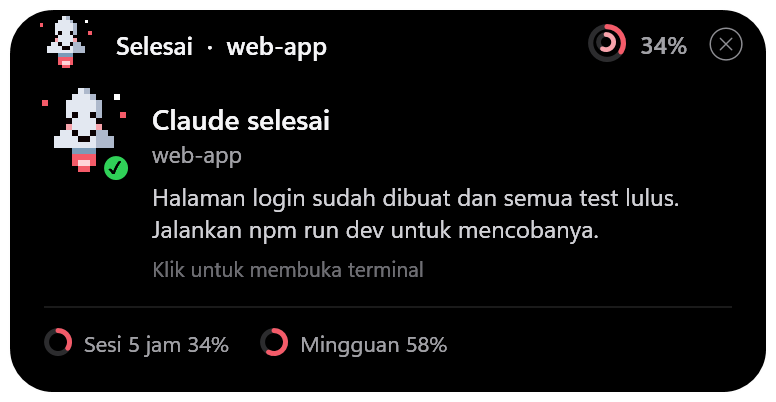
Semua yang perlu Anda tahu, dalam satu pil
Kerjakan hal lain selagi Claude bekerja. Pil akan memanggil Anda saat dibutuhkan.
Notifikasi + suara
Muncul saat Claude selesai, butuh izin, atau gagal, lengkap dengan cuplikan balasan terakhirnya.
Kuota selalu terlihat
Sisa kuota sesi 5 jam dan mingguan sebagai cincin, plus hitung mundur reset. Tak perlu lagi membuka /usage.
Klik, langsung ke terminal
Klik notifikasi untuk memunculkan Windows Terminal atau VS Code tempat sesi itu berjalan.
Banyak sesi sekaligus
Pantau beberapa sesi Claude Code paralel beserta statusnya masing-masing.
Multi-monitor
Seret pil ke kiri, kanan, atau ke monitor lain. Posisinya diingat, dan pil bersembunyi saat ada video fullscreen.
Ringan & aman
Hanya berjalan selama WSL hidup, tidak mencuri fokus, dan tidak menyentuh token login Anda.
Kecil saat diam, membesar saat perlu
Arahkan kursor ke pil untuk melihat detail kuota, sesi aktif, dan tombol pengaturan.
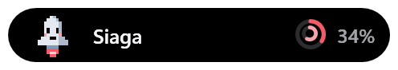
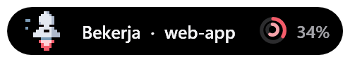
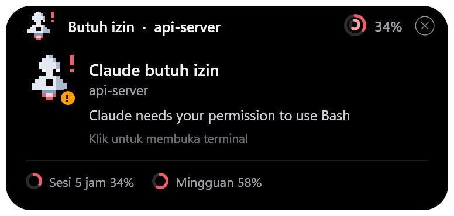
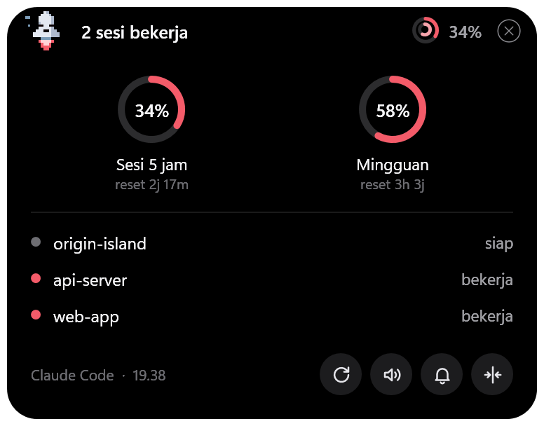
Kenalan dengan Ogin
Roket pixel kecil yang menunjukkan apa yang sedang Claude kerjakan. Sekali lirik, langsung tahu.
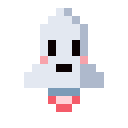
SiagaBelum ada sesi aktif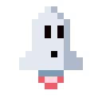
BerpikirClaude menyusun jawaban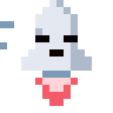
BekerjaAlat sedang berjalan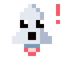
Butuh izinMenunggu jawaban Anda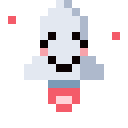
SelesaiTugas beres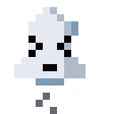
GagalAlat atau Claude error
Pasang dalam satu menit
Paling mudah: minta Claude Code yang memasangnya untuk Anda.
- Buka Claude Code di WSL
Jalankan
claudedari terminal WSL (bukan PowerShell). - Minta Claude memasang
Salin pesan di bawah. Kalau Claude meminta izin, setujui: installer mengubah setelan Claude Code dan
~/.bashrc. - Kirim satu prompt
Pil muncul di tengah atas layar, dan kuota tampil setelah prompt pertama.
Tolong install https://github.com/amimhayden22/origin-island — clone repo-nya lalu jalankan ./install.sh, baca README-nya dulu.git clone https://github.com/amimhayden22/origin-island.git
cd origin-island
./install.shPersyaratan
- Sistem
- Windows 10/11 dengan WSL2. PowerShell sudah bawaan Windows.
- Claude Code
- Terpasang di dalam WSL dan sudah login.
- Kuota
- Butuh langganan Claude Pro/Max. Dengan API key, notifikasi tetap jalan tanpa kuota.
- Lainnya
python3dangitdi WSL (sudah ada di Ubuntu bawaan).
Pertanyaan yang sering muncul
Apakah aman untuk akun Claude saya?
Ya. Secara default Origin Island hanya memakai fitur resmi Claude Code (hook dan statusline). Ia tidak membaca token login dan tidak menghubungi server mana pun.
Dari mana angka kuotanya?
Dari data yang dikirim Claude Code ke statusline setiap kali Anda memakainya. Kalau Claude Code lama tidak dipakai, angka terakhir tetap tampil beserta jam pembaruannya.
Apakah membuat laptop berat?
Tidak. Pil hanya berjalan selama WSL hidup, memakai sekitar 2–3% dari satu core CPU, dan bersembunyi saat ada video atau game fullscreen.
Kenapa kuota saya tidak tampil?
Pastikan Anda login dengan langganan Pro/Max, lalu kirim satu prompt. Kalau Anda sudah punya statusline sendiri, Origin Island tidak menimpanya, jadi kuota tidak tampil.
Bagaimana cara menghapusnya?
Klik ikon tempat sampah di panel pil, lalu konfirmasi. Bisa juga dengan ./uninstall.sh dari folder repo. Semua hook, setelan, dan file ikut dibersihkan.
Apakah mendukung AI selain Claude?
Saat ini khusus Claude Code. Dukungan untuk tool lain seperti Antigravity sedang direncanakan.
Biar Claude yang mengabari Anda
Gratis, open-source, dan bisa dihapus kapan saja.